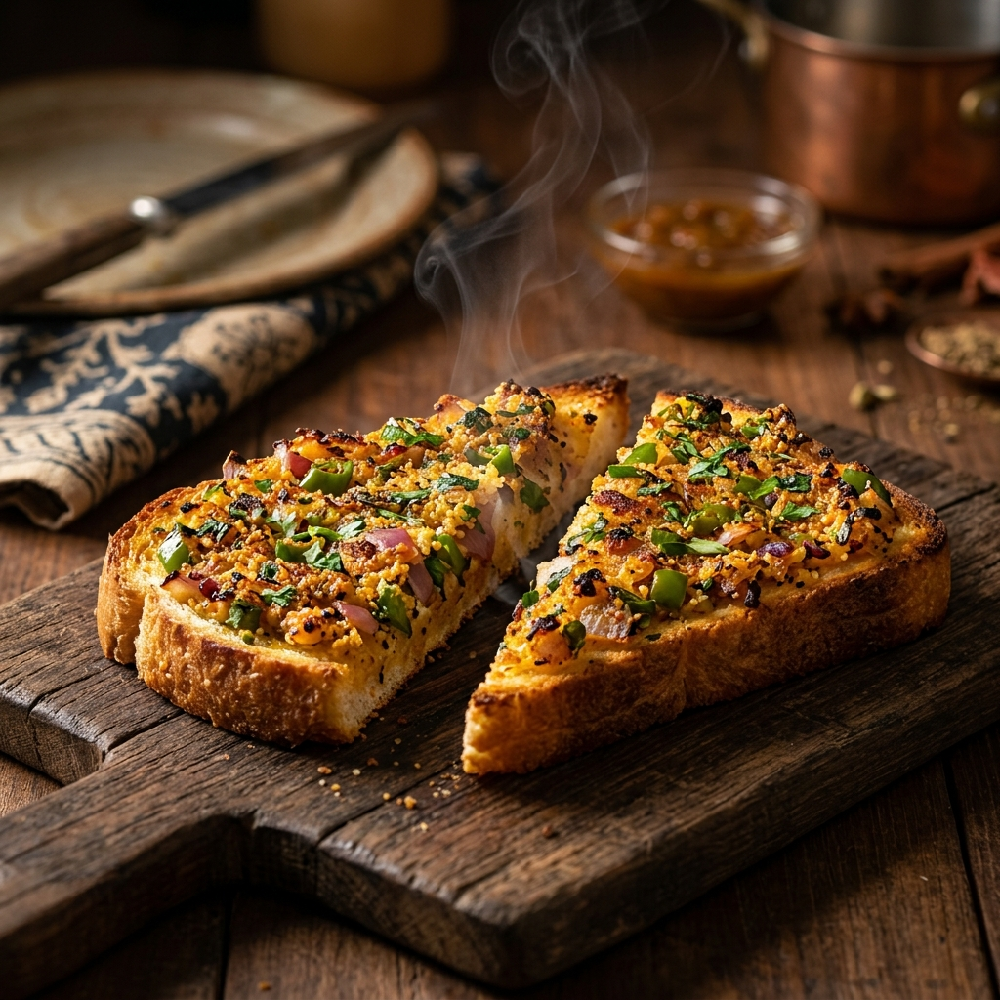

Rock Toast (Semolina Bread Toast)
A super fast, ultra-crispy bread toast coated in a savory, spiced semolina (sooji) and vegetable batter, seared to golden perfection on a skillet.

Ingredients
Tip: Tap items to check them off as you prep!
Step-by-Step Instructions
Follow steps sequentially. Mark completed steps to keep track.
Nutrition Facts
Estimated values per serving.
210
Calories
5g
Protein
7g
Fat
32g
Carbs
Tips for Beginners
- Resting is Key: Don't skip resting the batter. It allows the semolina grains to swell, helping the topping stick to the bread without falling off when flipped.
- Gentle Pressing: Use a flat spatula to press down on the bread during the first few seconds of cooking. This guarantees that the vegetables and semolina cook evenly.
- Add Cheese: To make it a true midnight craving, grate some cheddar or mozzarella on the plain side of the toast after flipping it!